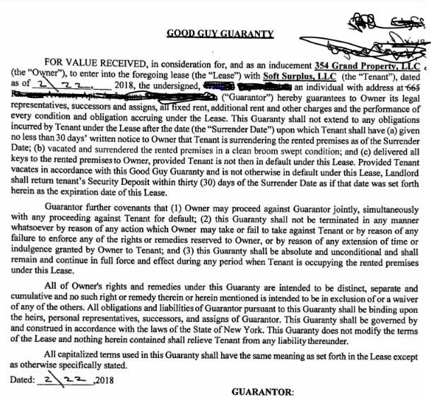

Hex House is a shared artist studio workspace and event space. We are based in a former auto repair shop, a 4,000 sq ft warehouse in East Williamsburg.
We started lease negotiations!! Our next lease would start in feb & we would need to know who the new guarantor is before then to get everything in place.
First, what is a guarantor? Someone who the landlord can get the rent from if we can’t do it. Our guarantor is special though, our guarantor would only be responsible if we stopped paying rent and didn’t give the LL (landlord) 30 days notice. This is because of the good guy guarantee, a clause on our lease (attached it at the bottom of this document). So all they have to do is trust us that we can send an email to LL, god forbid for whatever reason we cant make rent.
In the past Soft Surplus had a former LLC member’s father as the guarantor. We don’t have access to the information they sent to the LL and broker, so we don’t know exactly how much he made or what his assets were. But we estimate he had a years worth of the rent in assets.
I (Char) offered to try to be the guarantor but the LL and broker didn’t accept me because I didn't have enough assets/ didn’t make enough, I can’t remember the exact wording.
We wanted to see if anyone might know anyone who would be down to help us out. Do you have an Aunt/Uncle who is interested in being a patron of the arts? Are you close friends with a person who made a lot of money off of the stock market? Do you know anyone whose heart size is only outmatched by their wallet size?
What we would need from the guarantor:
Credit score report
Last 3 months of bank statements
An image of their ID
Trust us that, if something catastrophic happens and we have to vacate we will let the landlord know 30 days before we are leaving.
We can have the guarantor send their financial info directly to the LL and broker if they want privacy.
